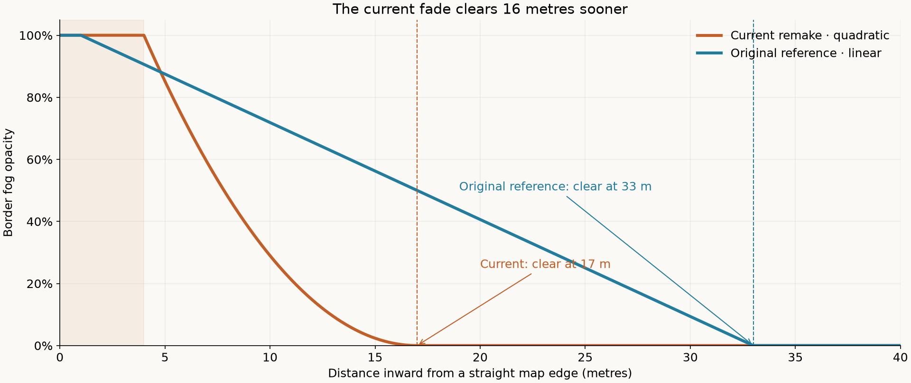
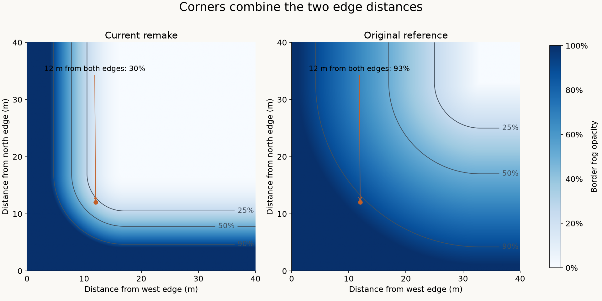

Cursed Lands · validation · 21 October 2026
Map-border fog audit
The remake fades to clear ground much sooner than the original reference. This was an intentional October 6 visual change, before the recent mod-formula merge. The matched views show both the clearer playable area and the abrupt border that still deserves attention.
Evidence labels: every screenshot below is rendered by the remake. “Original equation” substitutes the recovered 32 m linear border formula and its colour mode. It is not a capture of the original executable. Production settings have not been changed.
Matched views
Current remake
 16 m setting · quadratic fade · outer 4 m opaque
16 m setting · quadratic fade · outer 4 m opaqueOriginal equation in the remake
 32 m setting · linear fade · outer 1 m opaque
32 m setting · linear fade · outer 1 m opaqueShow the control with border fog disabled
 Distance fog remains active. This is not a proposed player setting.
Distance fog remains active. This is not a proposed player setting.Reading the images: the wider reference fogs more of the opening forest and road. The current profile preserves that detail, but some raised terrain at the boundary still looks abrupt. A global return to 32 m would also wash out more playable scenery; a follow-up should target exposed terrain and sky blending at these saved camera positions.
How wide is the fade?

Border opacity only; view-distance fog can add more coverage. Metres are game world units.
| Measurement | Current | Original reference |
|---|
| Fully opaque edge strip | 4 m | 1 m |
| 50% opacity | 7.81 m from edge | 17 m from edge |
| Completely clear | 17 m from edge | 33 m from edge |
| Opacity 12 m from a straight edge | 14.8% | 65.6% |
What happens at corners?

Both formulas combine the distance into each edge band. At 12 m from both sides, the current profile is about 30% opaque; the reference is about 93%. A straight-edge screenshot alone therefore misses a large part of the difference.
Provenance and limits
The native LiA test installation contains BorderFogDistance = 32. The recovered border calculation is documented in game/src/game/gfx.gd. Commit 7aa520e9 introduced the current profile on October 6. The menu keeps its separate 6 m linear band.
Captures use real maps, fixed camera transforms, a frozen world clock, Original look and OpenGL Compatibility on Linux. They cover the LiA opening, LiA Portal and a base-game map at noon and night. They do not qualify every map, enhanced setting or renderer. FPS labels are retained but are not benchmark results.
Download the labelled comparison · Camera positions, results and source notes · Vector fade chart · Vector corner chart